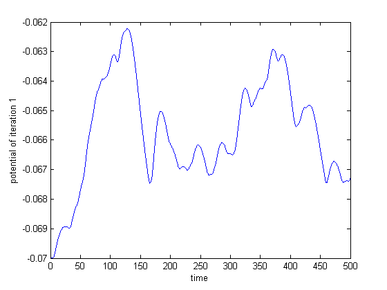
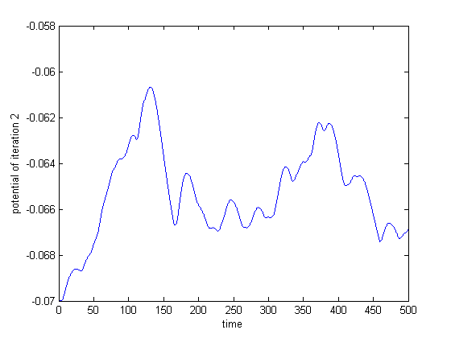
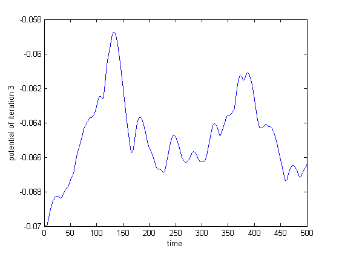
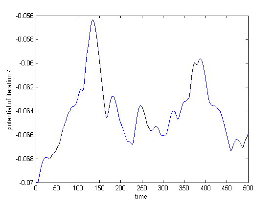
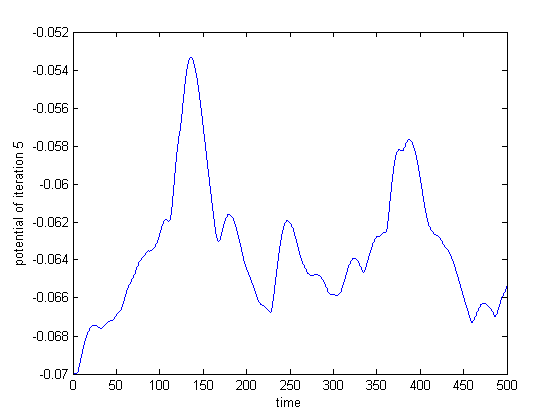
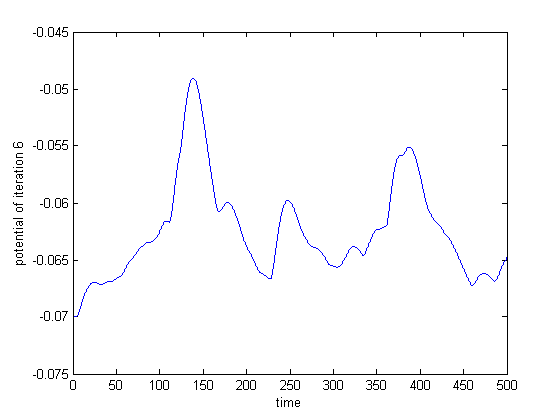
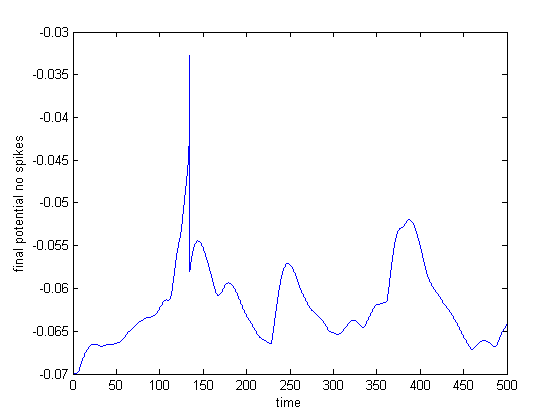

tic
Ns = 100;
T = 500;
lambda = 0.001;
deltat = 0.1;
N = T/deltat;
event = zeros(N,Ns);
for i = 1:Ns
a = zeros(N,1);
R = rand(size(a));
a(R<lambda*deltat) = 1;
event(:,i) = a;
end
event = reshape(event,Ns,N);
time = deltat:deltat:T;
sigmaw = 5;
wo = 50;
Io = 10^(-12);
we = randn(1,Ns);
we = wo + sigmaw*we;
tc_m = 15;
tc_s = tc_m/4;
count = 0;
Iapp = zeros(Ns,N);
for i = 1:Ns
tk = find(event(i,:)==1);
[tkr,tkc] = size(tk);
if (tkc>0)
for j = 1:N
for k = 1:tkc
if(tk(k)<j)
Iapp(i,j) = Iapp(i,j) + (exp((tk(k)-j)*deltat/tc_m) - exp((tk(k)-j)*deltat/tc_s));
end
end
end
end
end
Japp = Iapp;
for i = 1:Ns
Iapp(i,:) = Iapp(i,:)*we(i)*Io;
end
Iappf = sum(Iapp);
while (1)
[V,nspikes] = q1p2_func(1,0.5,Iappf,1);
if (nspikes>0)
break;
end
figure, plot(time,V);
xlabel('time');
ylabel(['potential of iteration ' num2str(count+1)]);
V_max = max(V);
pos_max = find(V==V_max);
count = count+1;
for i=1:Ns
tk = find(event(i,:)==1);
tk = tk(tk<pos_max);
[tkr,tkc] = size(tk);
if (tkc>0)
deltatk = (pos_max-tk(tkc))*deltat;
we(i)=min(500, we(i)*(1 + (exp(-deltatk/tc_m) - exp(-deltatk/tc_s))));
end
end
for i = 1:Ns
Iapp(i,:) = Japp(i,:)*we(i)*Io;
end
Iappf = sum(Iapp);
end
count
we
figure, plot(time, V);
xlabel('time');
ylabel('final potential no spikes');
toc
count =
6
we =
Columns 1 through 7
48.5756 38.5573 49.6223 52.8678 60.1599 47.4075 47.9868
Columns 8 through 14
39.4804 42.5414 50.6879 50.0060 47.1515 47.7979 50.3046
Columns 15 through 21
34.6306 48.8008 47.8909 51.3594 45.0239 48.0015 46.8050
Columns 22 through 28
48.6135 69.8919 56.9993 50.6757 51.9082 44.0463 52.3781
Columns 29 through 35
171.6852 54.0200 45.9754 50.5035 51.9357 50.4533 49.5673
Columns 36 through 42
52.4760 71.1460 42.2708 53.4249 56.6097 49.0693 44.9767
Columns 43 through 49
42.9202 65.1226 60.3704 56.3141 47.2423 46.6602 50.9504
Columns 50 through 56
47.4488 55.3890 53.4338 49.4571 55.7073 52.7764 37.8760
Columns 57 through 63
458.3001 56.4313 55.8774 58.5126 53.4342 45.1029 60.2812
Columns 64 through 70
48.8058 39.4676 52.2635 41.8834 59.2314 58.1960 46.2054
Columns 71 through 77
80.2699 52.8571 54.5421 56.4789 52.5200 49.2033 154.7535
Columns 78 through 84
43.0616 51.6271 48.8374 50.7231 52.7078 44.3540 47.4875
Columns 85 through 91
49.0300 186.1403 52.0182 49.3173 46.1593 43.2397 47.3365
Columns 92 through 98
61.1432 59.5914 50.9068 46.6725 53.4302 41.6309 50.4760
Columns 99 through 100
56.4033 49.9637
Elapsed time is 4.029646 seconds.
      